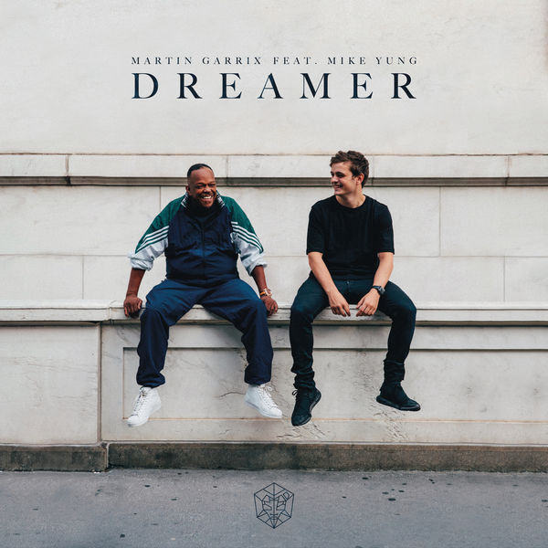
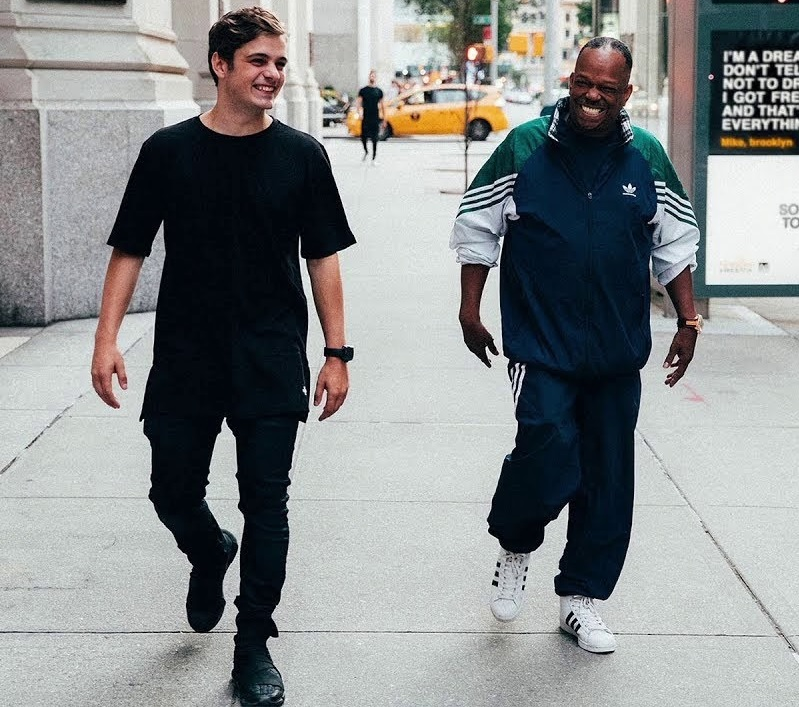

-
Martin Garrix feat. Mike Yung - Dreamer (Official Video) ♫ Dreamer feat. Mike Yung is out now: http://stmpd.co/MGMDRID ♫ Home (feat. Bonn) is out now: http://stmpd.co/MGBHMID DreamCoding by Macoronjung 954,684 view
-
 Follow Martin Garrix: Facebook: http://facebook.com/MartinGarrix Instagram: http://instagram.com/MartinGarrix YouTube: http://youtube.com/MartinGarrix DreamCoding by Macoronjung 842,597 view
Follow Martin Garrix: Facebook: http://facebook.com/MartinGarrix Instagram: http://instagram.com/MartinGarrix YouTube: http://youtube.com/MartinGarrix DreamCoding by Macoronjung 842,597 view -
Follow Mike Yung Facebook: https://www.facebook.com/mikeyung Instagram: https://www.instagram.com/mikeyung/ YouTube: https://www.youtube.com/makeyung DreamCoding by Macoronjung 684,921 view